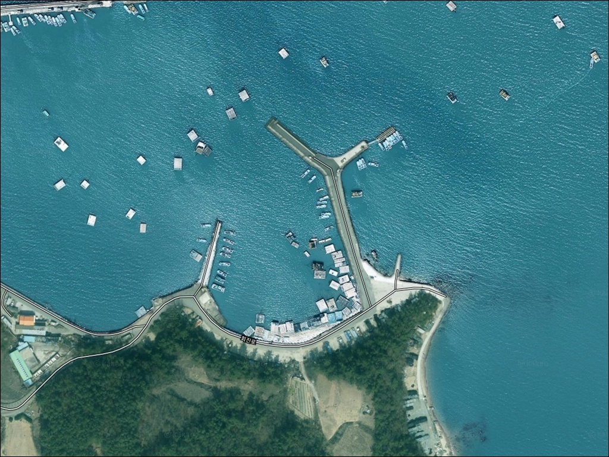
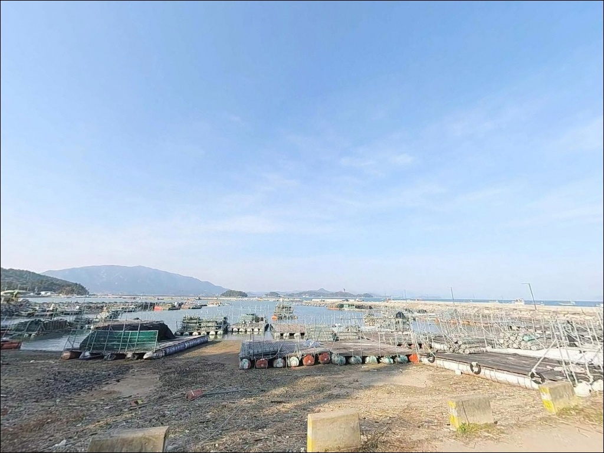
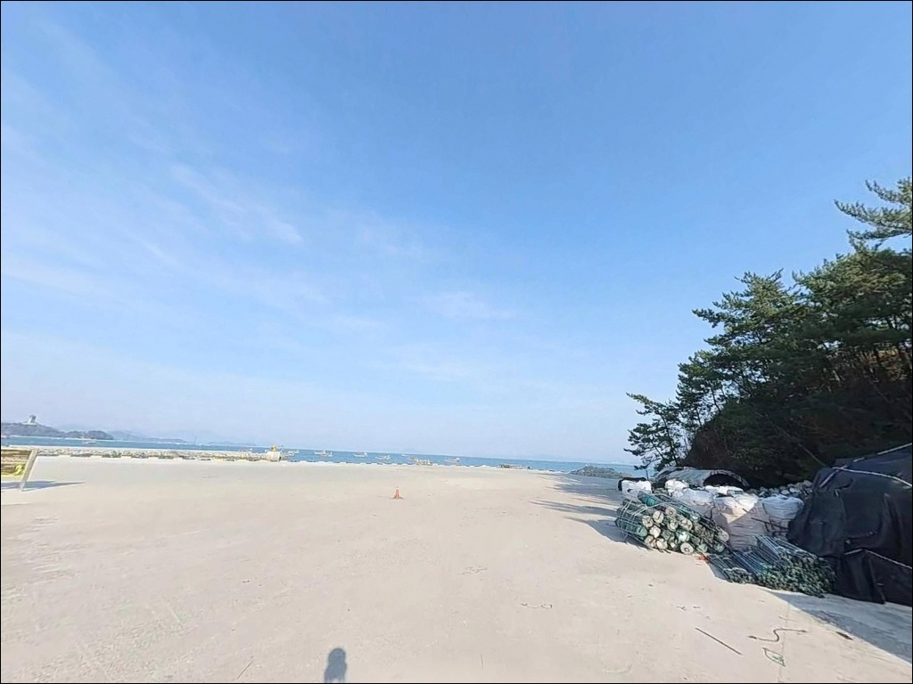
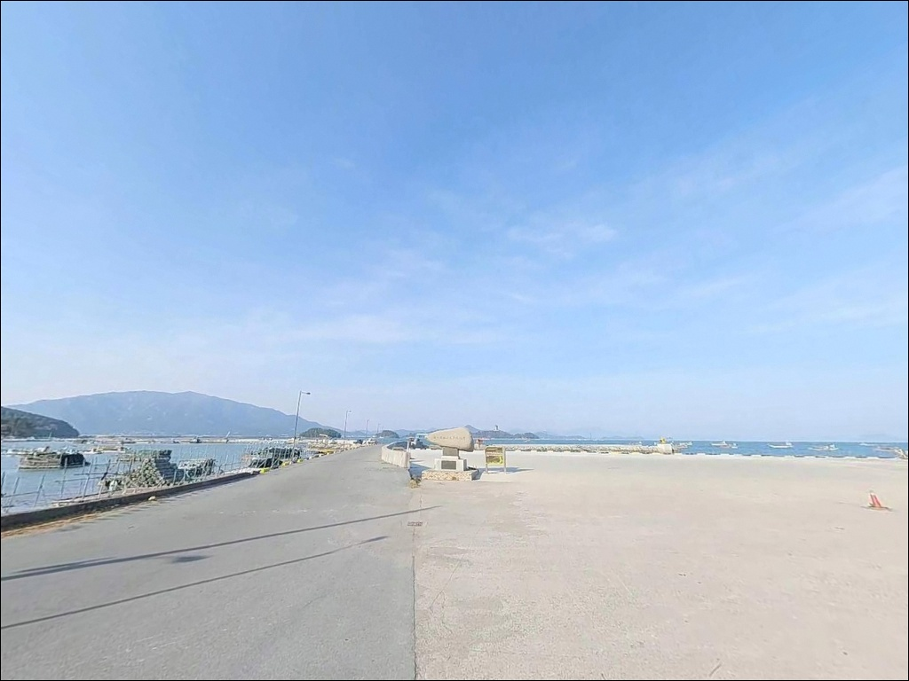
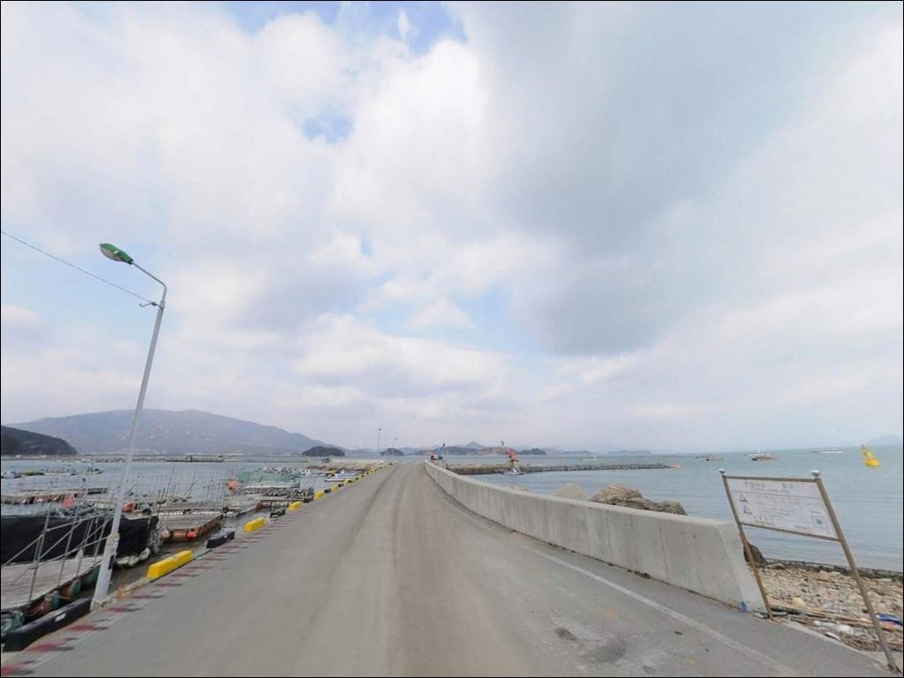
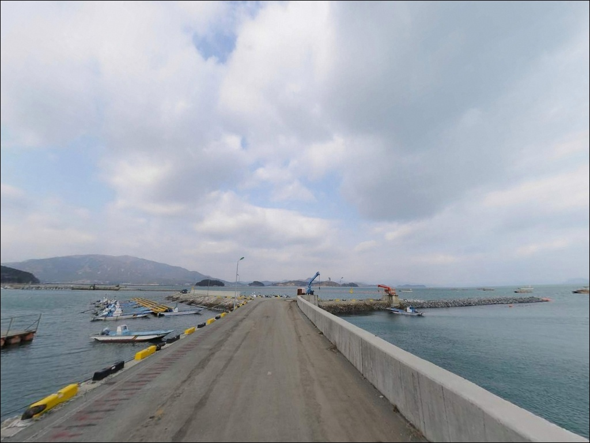
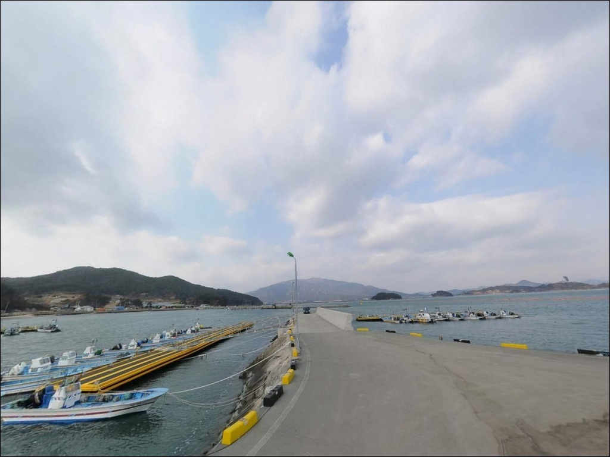
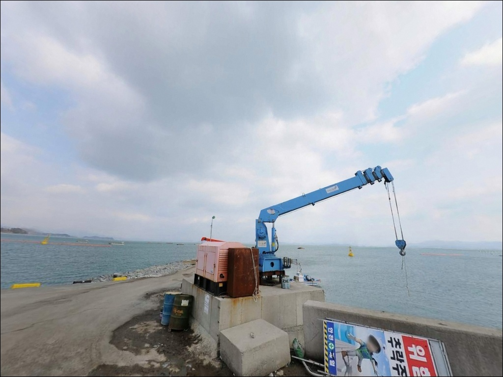
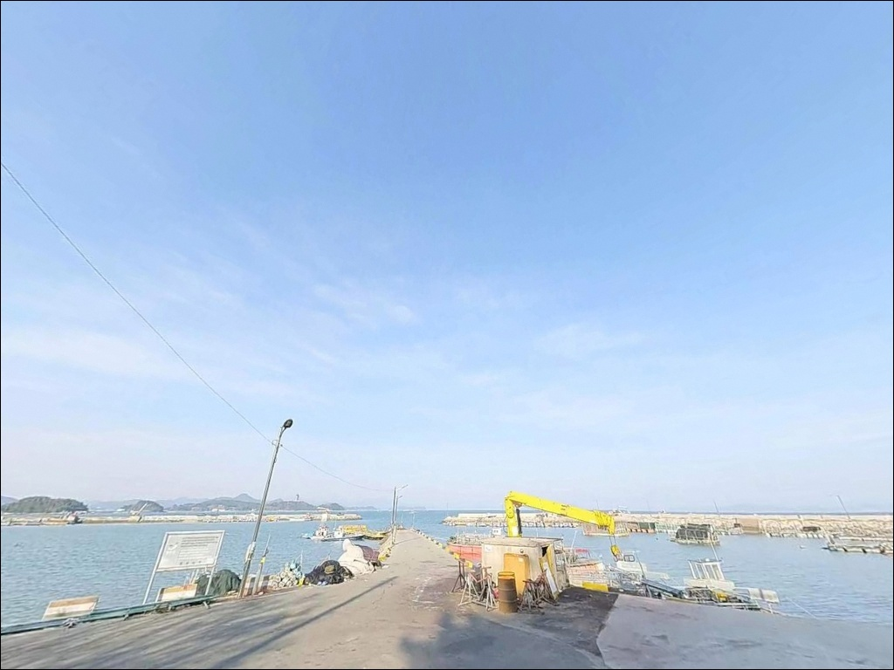

대리방파제, 전남 장흥군 바다가 바로 앞인 방파제 차박 낚시 포인트
이 페이지에는 광고(제휴 링크 포함)가 있으며, 광고 링크를 통해 구매하면 운영자가 판매 수익 또는 수수료를 받을 수 있습니다. 포인트 사진: 카카오맵 스카이뷰·로드뷰. 이 페이지의 지도·사진 이미지는 카카오맵의 실제 서비스 이미지와 다를 수 있습니다.


포인트 안내
대리방파제
전남 장흥군 회진면 대리 1-3
득량만 물골을 품은 방파제에서
사리 전후 조류를 무시하고 들어서면
채비가 바닥을 잡지 못하고
흘러버리는 상황이 반복됩니다.
대리방파제는 외항이 득량만 본류 방향으로
직접 열린 구조여서,
물때 계산이 낚시 여건의 전부를 결정합니다.
전남 장흥군 회진면 대리,
득량만 서측 입구에 자리한 대리방파제는
정남진 해양낚시공원과 맞닿은 소규모 어항 방파제입니다.
낚시교·부잔교식 낚시터를 갖춘 공원 시설이
바로 옆에 연결되어 있어,
방파제 외항과 해양낚시공원을 동시에
탐색할 수 있는 구조입니다.
이 글은
대리방파제의 진입 동선,
차박 여건, 물때 판단 기준,
낚시 스타일별 공략 조건에 집중합니다.
조황 단정이나 특정 어종 보장은
이 글의 범위에 포함되지 않습니다.

1. 진입 동선과 포인트 접근성
23번 국도에서 회진면 방면으로 진입한 뒤
대리 방향 해안도로를 따라 이동하면
정남진 해양낚시공원 이정표가 동일 방향으로
안내하는 구간이 나옵니다.
진입로는 포장도로로 이어지며,
대리1길 일대는 차량 상호 교행이 가능한
수준의 도로 폭을 갖추고 있습니다.
승용차는 물론 캠핑카까지 통행이 가능한
도로 여건이어서,
대형 차량이라도 진입 자체에 큰 무리는 없습니다.
다만 방파제 안쪽 어항 구역은 어선 접안 공간이
일부를 차지하고 있어,
주차 자리를 잡기 전에
어선 동선과 어구 적치 구역을 먼저 확인하는 것이
기본 순서입니다.
주차 후보는 정남진 해양낚시공원 주차 공간,
대리항 물양장 주변 공터,
해안도로 갓길 순으로 확인하는 것이
현실적인 접근법입니다.
공원 구역 주차 공간이 가장 넓고
방파제 접근도 용이한 편입니다.

2. 차박 환경과 야간 체류 여건
대리항 주변은 소규모 어촌 마을 구조로,
야간에는 차량 통행이 뜸하고
민가 밀집도가 높지 않은 편입니다.
정남진 해양낚시공원 구역에는
해안 데크, 낚시교, 정자와 함께
조명 시설이 갖춰져 있어
야간 시야 확보는 공원 구역 안에서만
기대할 수 있는 편입니다.
방파제 외항 끝단 방향으로 갈수록
가로등이 줄어들어
야간 낚시 시 헤드랜턴은 필수 장비입니다.
차박 프라이버시는 민가 밀집도가 낮아
상대적으로 양호한 편이지만,
완전한 노지 차박지보다는
주차 대기 수준의 체류가 적합한 구조입니다.
낚시를 마치고 가볍게 한숨 쉬며
하룻밤 머무는 용도라면 나쁘지 않습니다.
다만 정남진 해양낚시공원 구역 내
야영 및 취사 허용 여부는
사전에 운영 기관에 확인하는 것이
불필요한 마찰을 막는 준비입니다.


3. 주변 편의시설 및 인프라 현황
대리항 반경 1km 이내에는
상업시설 밀집도가 낮은 편입니다.
회진면 소재지(회진리) 방면으로 이동하면
소형 슈퍼와 식당이 위치하며,
회진면 내에는 편의점이
2개소 등록되어 있습니다.
주유소는 회진면 또는 관산읍 방면으로
이동이 필요합니다.
관산읍(약 7~9km)에는 편의점·마트·주유소·식당이
집중되어 있어,
식수·연료·얼음·낚시 소품은
출발 전 관산읍에서 보충하는 동선이
가장 효율적입니다.
응급 상황 발생 시 장흥읍까지 약 25km 거리가
소요됩니다.
비상약품과 수분 준비는
출발 전 완비하는 것이 기본 조건이며,
정남진 해양낚시공원 인접 시설을
보조 인프라로 활용할 수 있습니다.

4. 물때 먼저 확인해야 하는 이유
대리방파제를 찾기 전에 가장 먼저 확인할 것은
물때입니다.
득량만은 반폐쇄형 만 구조지만
외항이 만 본류 방향으로 열려 있어
사리 전후 조류가 상당히 빠르게 흐릅니다.
바다타임에서 대리 또는 회진면 기준
물때를 확인하고,
조금 전후나 들물·썰물 교차 시점을
출조 타이밍으로 잡는 것이 기본 전략입니다.
대리는 현역 어항이라
어선 입출항이 이루어지는 공간입니다.
어선 이동 구역과 어구·어망 적치 구역에서
낚시하는 일은 피해야 합니다.
야간 출조 시에는 헤드랜턴과 구명조끼를
상시 착용하는 것이 안전의 기본입니다.
채비 손실은 테트라포드 주변 암초 구간에서
잦은 편입니다.
여분 채비와 여분 봉돌을 넉넉하게 챙기면
현장에서의 채비 교체 시간을 줄일 수 있습니다.

5. 득량만 입구가 만드는 낚시 지형 조건
대리방파제 외항 끝단은
득량만 본류 조류가 직접 닿는 구간입니다.
방파제 콧부리 방향 수심은
만조 시 기준 6m 이상이 형성되며,
뻘·모래 혼합 저질과 테트라포드 주변 수중여가
복합적인 어종 서식 환경을 만들어줍니다.
내항은 수심이 얕고 정체 수역에 가까운 구조입니다.
낚시 효율은 외항 끝단과
방파제 콧부리 주변이 확실히 높습니다.
들물이 들어오는 타이밍에
조류가 방파제 끝단 쪽으로 흘러들면서
어종의 이동이 활발해지는 편입니다.
대리방파제 외항 끝단은 득량만 조류가
직접 닿는 구간으로,
들물·썰물 교차 타이밍에
릴찌와 원투 조과가 올라오는 구조입니다.
최신 조황은 출조 전에
"장흥 대리방파제 낚시" 또는 "득량만 조황"으로
검색해두는 것이 현장 판단에 도움이 됩니다.


6. 외항·해양낚시공원 구간별 낚시 스타일 제안
이 포인트에서 지형 조건과 가장 잘 맞는 방식은
릴찌낚시입니다.
방파제 끝단에서 콧부리 방향으로
득량만 조류를 타며 채비를 흘리는 방식이
외항 노출 구조와 잘 맞습니다.
들물·썰물 교차 시점 집중 공략이
이 포인트 릴찌낚시의 기본 전략입니다.
원투낚시도 외항 방향에서
효과적으로 운용할 수 있습니다.
뻘·모래 혼합 저질 구간을 겨냥해
방파제 끝단에서 득량만 방향으로 캐스팅하는 방식으로,
야간에는 붕장어와 농어 계열 어종을
기대해볼 수 있는 타이밍입니다.
정남진 해양낚시공원 낚시교와 부잔교 구간은
루어와 소형 에깅 채비 운용에 유리합니다.
방파제 벽면과 테트라포드 주변에서
볼락·우럭 라이트게임을 함께 묶어 진행하면
한 번의 출조에서
복수 방식 탐색이 가능한 구조입니다.
갑오징어 에깅은 득량만 일대에서
시즌 시 활성도가 올라오는 장르입니다.

7. 대안 포인트와 플랜 B 동선
대리방파제 상황이 여의치 않을 때
가장 먼저 이동할 곳은
회진항 방파제입니다.
대리방파제에서 약 2km 거리로,
같은 득량만 서안에 위치한
규모가 큰 어항 방파제입니다.
수심과 시설 여건 모두 안정적이어서
낚시와 주차 환경을 함께 보완할 수 있습니다.
노력대교를 건너 노력도 방면으로 이동하면
노력항이 있습니다.
대리항 앞바다에서 노력대교를
가까이서 조망할 수 있을 만큼
지척에 위치한 포인트이며,
섬 주변 해역의 낚시 자원을
별도 탐색하고 싶을 때 선택할 수 있는
대안입니다.
정남진 해양낚시공원과 대리방파제를
동시에 공략하면 해상 낚시교와
방파제 외항을 모두 탐색할 수 있어
하루 출조 효율이 높아집니다.
차박 대체 후보로는
회진항 방향 해안도로 변 공터가
공간 여건이 더 넓은 편입니다.

득량만 조류를 이해하면
대리방파제가 달라 보입니다
릴찌낚시나 원투낚시를 위주로 즐기는 낚시인이라면
대리방파제의 지형 조건은 잘 맞는 구조입니다.
외항 끝단 수심과 득량만 조류 흐름이
방파제 낚시의 기본 조건을 갖추고 있고,
정남진 해양낚시공원 낚시교와 부잔교가
바로 옆에서 추가 탐색 공간을 열어줍니다.
반면 물때 계산 없이 사리 전후에 진입하거나,
어선 동선을 무시하고 어항 내부에
자리를 잡으면 낚시 자체가
불편해지는 상황을 맞닥뜨릴 수 있습니다.
물때 확인, 진입 전 어선 동선 파악, 자급 준비,
이 세 가지를 갖추고 간다면
득량만 특유의 조류를 제대로 즐길 수 있는
출조가 됩니다.
조용한 어항 방파제에서 낚싯줄을 드리우고
하룻밤 차 안에서 머무는 여행자라면,
회진면 대리의 낚시와 차박이
낯설지 않은 하루를 만들어줄 것입니다.